How the password vault is built — the request lifecycle, authentication, and the credential encryption design from end to end.
A single Next.js application serving both the UI and the API, backed by PostgreSQL.

lib/crypto); the server stores only opaque ciphertext. See docs/ENCRYPTION_DESIGN.md.middleware.ts (NextAuth withAuth)/auth, /api, statics
Redirects unauthenticated → /auth/login
Because Next.js runs UI and API in one process, sensitive operations — session checks, encryption, database access — happen server-side only. The browser never holds the encryption key or talks to PostgreSQL directly.
Routing is split by access level using App Router route groups.
Protected. Every page here requires a valid session; middleware.ts enforces it before the page renders.
Public. Reachable without a session so users can get in or recover access.
(main) parentheses create a logical grouping without adding a URL segment — so app/(main)/vault is served at /vault, while letting a shared layout and the auth boundary wrap every protected page.
NextAuth with a credentials provider, JWT sessions, and a short 15-minute expiry.
First/last name, username, email, password sent to POST /api/auth/register.
bcryptjs with a cost factor of 10. The plaintext password is never stored.
The bcrypt hash is saved as masterHash; the account is ready to log in.
The authorize() callback looks the user up by email.
bcrypt.compare(password, user.masterHash). On failure, an error is thrown and no session is issued.
The jwt callback embeds id, email, firstName, lastName, userName into a signed token — no database session row (strategy: "jwt").
The session callback maps token claims onto session.user. Token lifetime: maxAge = 60 × 15 = 15 minutes.
middleware.ts validates the JWT at the edge; API routes re-check via getServerSession() before touching data.
A one-time code flow backed by the UserOTP model: forgot-password generates a hashed OTP with an expiry, verify-otp checks it, and reset-password sets a new masterHash. Email delivery uses Resend + React Email templates.
How a credential is meant to be protected: AES-256-GCM with a key derived per user via PBKDF2.
| Element | Choice | Why it matters |
|---|---|---|
| Cipher | AES-256-GCM | Authenticated encryption — provides confidentiality and tamper detection via an auth tag. |
| Key derivation | PBKDF2-SHA256 | Turns a secret into a 32-byte key; deliberately slow to resist brute force. |
| Iterations | 100,000 | Raises the cost of each guess in an offline attack. |
| Salt | Per-user | Two users with the same input never derive the same key; defeats rainbow tables. |
| IV | Random, per credential | Same plaintext encrypts to different ciphertext each time. |
| Auth tag | Per credential (GCM) | Verified on decrypt — modified ciphertext is rejected. |
The derived key lives only in server memory for the duration of the request — it is never written to the database or sent to the browser.
username, password, website, notes → one JSON string.
{ username, password, website, notes }
deriveKey(master, salt) → 32-byte AES key.
Random IV per credential, then AES-256-GCM produces ciphertext + an authentication tag.
The row stores encryptedData and iv as Bytes. The label stays plaintext for listing/search; everything sensitive is opaque.
The reverse: load the row, re-derive the key from the master password + the user's salt, feed encryptedData, iv, and the auth tag into AES-256-GCM. If the tag doesn't verify, decryption fails closed and nothing is returned.
encryptedData + iv — is not enough to recover any password.
// app/api/credentials/route.ts — the cryptographic core const ALGORITHM = 'aes-256-gcm'; const KEY_LENGTH = 32; function deriveKey(masterPassword, salt) { return crypto.pbkdf2Sync(masterPassword, salt, 100000, KEY_LENGTH, 'sha256'); } function encryptData(data, key) { const iv = crypto.randomBytes(16); const cipher = crypto.createCipheriv(ALGORITHM, key, iv); const encrypted = Buffer.concat([cipher.update(data, 'utf8'), cipher.final()]); return { encrypted, iv, tag: cipher.getAuthTag() }; }
What happens on a typical call to the credentials API.
The CredentialsApi client (in lib/credentialsApi.ts) issues GET/POST/PUT/DELETE to /api/credentials.
The route handler calls getServerSession(); no session → 401 Unauthorized.
Look up the user by session.user.email; missing → 404. This also scopes the query so users only see their credentials.
Write path encrypts before prisma.credential.create; read path decrypts after findMany.
Plaintext fields go back to the client over HTTPS; ciphertext stays in the database.
| Method | Endpoint | Purpose |
|---|---|---|
GET | /api/credentials | List the user's credentials (decrypted) |
POST | /api/credentials | Create & encrypt a credential |
GET | /api/credentials/[id] | Fetch one credential |
PUT | /api/credentials/[id] | Update & re-encrypt |
DELETE | /api/credentials/[id] | Remove a credential |
GET/POST | /api/category | List / create categories |
POST | /api/generate-password | Server-side strong password generation |
Four Prisma models. ● primary key ● foreign key.
userId = null, seeded: Social Media, Banking, Work, Personal) or user-owned. Deleting a user cascades their OTPs.
Where the important pieces live.
| Path | Responsibility |
|---|---|
middleware.ts | Edge auth boundary (NextAuth withAuth) |
app/api/auth/[...nextauth] | NextAuth config: provider, JWT & session callbacks |
app/api/credentials/ | Vault CRUD + the encrypt/decrypt logic |
lib/credentialsApi.ts | Typed client-side wrapper for the credentials API |
lib/authenticate.ts | Reusable server-side session guard |
lib/prismaConnect.ts | Singleton Prisma client |
lib/generatePassword.ts | Password generation rules |
lib/cloudinary.ts · lib/email.ts | Image upload & transactional email helpers |
prisma/schema.prisma | Data model & migrations source of truth |
emails/ | React Email templates (Resend) |
The design above is the target. The current code is partly scaffolded.
app/api/credentials/route.ts the real deriveKey / encryptData / decryptData functions are defined but not called. As shipped:
POST stores the credential JSON as plaintext bytes (Buffer.from(credentialData)) — no encryption is applied.GET returns hard-coded placeholders ('encrypted_username', …) instead of decrypting real data.crypto.createCipher (key-only, ignores the IV). To match this guide it should move to crypto.createCipheriv(algo, key, iv) and the generated IV/tag must be stored and reused on decrypt. The salt source for deriveKey still needs to be defined per user.
| # | Step |
|---|---|
| 1 | Add a per-user salt column (or derive deterministically) and persist the GCM tag alongside iv. |
| 2 | In POST: verify the master password, deriveKey(), encryptData(), store real ciphertext + iv + tag. |
| 3 | In GET/[id]: decryptData() the row instead of returning placeholders. |
| 4 | Switch createCipher → createCipheriv for both directions. |